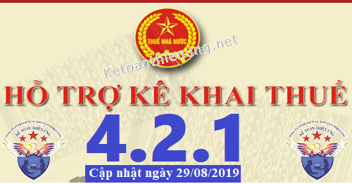
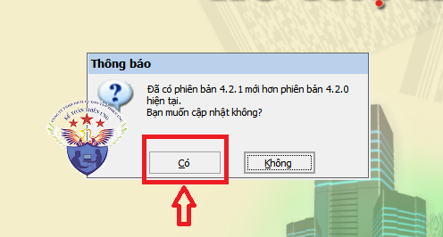
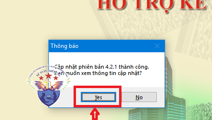

Phần mềm hỗ trợ kê khai thuế HTKK 4.2.1 mới nhất 2019 là Phần mềm HTKK 4.2.1 mới nhất ngày 29/8/2019 của Tổng cục thuế. Download phần mềm HTKK 4.2.1 miễn phí tại đây.
Ngày 29/08/2019 Tổng cục thuế thông báo về việc Nâng cấp ứng dụng Hỗ trợ kê khai (HTKK) theo kiến trúc và công nghệ mới phiên bản 4.2.1
TỔNG CỤC THUẾ THÔNG BÁO
V/v: Triển khai ứng dụng Hỗ trợ kê khai (HTKK) phiên bản 4.2.1 đáp ứng yêu cầu nghiệp vụ theo Thông tư số 44/2017/TT-BTC ngày 12/05/2017 của Bộ Tài chính và Nghị định số 164/2016/NĐ-CP ngày 24/12/2016 của Chính Phủ về phí bảo vệ môi trường đối với khai thác khoáng sản
Tổng cục Thuế thông báo nâng cấp ứng dụng Hỗ trợ kê khai (HTKK) phiên bản 4.2.1 đáp ứng yêu cầu nghiệp vụ theoThông tư số 44/2017/TT-BTC ngày 12/05/2017 của Bộ Tài chính quy định về khung giá tính thuế tài nguyên đối với nhóm, loại tài nguyên có tính chất lý, hóa giống nhau đồng thời nâng cấp một số yêu cầu phát sinh khi triển khai phiên bản 4.2.0, cụ thể như sau:
1. Nâng cấp ứng dụng đáp ứng yêu cầu nghiệp vụ theo Thông tư số 44/2017/TT-BTC
- Nâng cấp chức năng kê khai các tờ khai 01/TAIN, 02/TAIN, 01/CNKD: Cập nhật danh mục thuế tài nguyên; Kiểm tra giá tính thuế không được nhỏ hơn giá của UBND Tỉnh hoặc giá tối thiểu của Bộ Tài chính.
- Nâng cấp chức năng kê khai các tờ khai 01/BVMT, 02/BVMT, 01/CNKD: Cập nhật danh mục phí bảo vệ môi trường theo Nghị định số 164/2016/NĐ-CP.
- Nâng cấp chức năng đăng ký danh mục thuế tài nguyên: Cập nhật danh mục thuế tài nguyên theo Thông tư số 44/2017/TT-BTC (hiệu lực danh mục mới sẽ áp dụng với tờ khai từ kỳ tính thuế 10/2019 và quyết toán năm 2019)
- Bổ sung chức năng đăng ký danh mục phí bảo vệ môi trường theo Nghị định số 164/2016/NĐ-CP (hiệu lực danh mục mới sẽ áp dụng với tờ khai từ kỳ tính thuế 10/2019 và quyết toán năm 2019)
2. Nâng cấp chức năng kê khai tờ khai 01/TTĐB
- Kiểm tra ràng buộc: nếu cột 8 trên tờ khai lớn hơn 0 thì dòng tổng cộng của cột 7 Bảng II cộng dòng tổng cộng của cột 5 Bảng III của phụ lục cũng phải lớn hơn 0.
- Kiểm tra ràng buộc: Số thuế tiêu thụ đặc biệt được khấu trừ tại cột 8 trên tờ khai 01/TTĐB phải nhỏ hơn hoặc bằng tổng cộng của cột 7 bảng II cộng dòng tổng cộng của cột 5 bảng III của phụ lục 01-1/TTĐB.
- Kiểm tra ràng buộc: Tổng giá trị cột 5 ở Bảng III không được lớn hơn tổng giá trị cột 10 ở Bảng I của phụ lục 01-1/TTĐB.
3. Cập nhật một số yêu cầu phát sinh của ứng dụng HTKK 4.2.0:
3.1. Cập nhật địa bàn hành chính
- Cập nhật Thị xã Long Khánh thành Thành phố Long Khánh, tỉnh Đồng Nai
- Cập nhật xã Văn Sơn thành xã Vân Sơn, huyện Triệu Sơn, tỉnh Thanh Hóa
- Cập nhật xã Sáng Nhè thành xã Xá Nhè, huyện Tủa Chùa, tỉnh Điện Biên
- Cập nhật xã Xín Chải thành xã Sín Chải, huyện Tủa Chùa, tỉnh Điện Biên.
3.2. Chức năng lập Báo cáo lưu chuyển tiền tệ trực tiếp thuộc Bộ báo cáo tài chính giữa niên độ dạng đầy đủ (TT200/2014/TT-BTC)
- Cập nhật chỉ tiêu [05] – Thuế thu nhập doanh nghiệp đã nộp: Cho phép nhập âm, dương.
3.3. Chức năng kê khai Đăng ký người phụ thuộc giảm trừ gia cảnh
- Cập nhật sửa lỗi cảnh báo đỏ khi kê khai phần I: “Đăng ký cấp mã số thuế cho người phụ thuộc” trong trường hợp nhập cột “Từ tháng” và “Đến tháng” của các dòng trong cùng một năm.
3.4. Chức năng kê khai tờ khai thuế giá trị gia tăng (01/GTGT)
- Cập nhật sửa lỗi hiển thị chỉ tiêu <maLyDoGiaHan> khi kết xuất XML trong trường hợp không tích chọn chỉ tiêu [Gia hạn] trên màn hình kê khai.
3.5. Chức năng kê khai tờ khai quyết toán thuế thu nhập doanh nghiệp (03/TNDN)
- Cập nhật mở rộng độ dài dữ liệu của chỉ tiêu “Bên độc lập” tại phụ lục GDLK-04: Cho phép nhập tối đa 16 ký tự.
------------------------------------------------------------------------
Bắt đầu từ ngày 30/08/2019, khi lập hồ sơ khai thuế có liên quan đến nội dung nâng cấp nêu trên, tổ chức, cá nhân nộp thuế sẽ sử dụng các chức năng kê khai tại ứng dụng HTKK 4.2.1. thay cho các phiên bản trước đây.

----------------------------------------------------------------------
Download Phần mềm HTKK 4.2.1 tại đây:

Để cài đặt được HTKK 4.2.1, máy tính của NNT cần đáp ứng thông số sau:
- Hệ điều hành WinXP (SP2, SP3), Win 7 trở lên… (không hỗ trợ hệ điều hành iOS, Mac).
- Máy tính có cài .NET Framework 3.5 trở lên (có thể tải bộ cài .NET Framework 3.5 tại đây).
- Nếu máy tính sử dụng hệ điều hành Win 7 trở lên không phải cài đặt .NET Framework 3.5 mà chỉ cần kích hoạt .NET Framework 3.5 đã tích hợp sẵn theo tài liệu hướng dẫn cài đặt tại đây
- Hệ điều hành WinXP (SP2, SP3), Win 7 trở lên… (không hỗ trợ hệ điều hành iOS, Mac).
- Máy tính có cài .NET Framework 3.5 trở lên (có thể tải bộ cài .NET Framework 3.5 tại đây).
- Nếu máy tính sử dụng hệ điều hành Win 7 trở lên không phải cài đặt .NET Framework 3.5 mà chỉ cần kích hoạt .NET Framework 3.5 đã tích hợp sẵn theo tài liệu hướng dẫn cài đặt tại đây
-----------------------------------------------------------------------------------------------
- Mọi phản ánh, góp ý của tổ chức, cá nhân nộp thuế được gửi đến cơ quan Thuế theo các số điện thoại, hộp thư điện tử hỗ trợ NNT về ứng dụng HTKK do cơ quan Thuế cung cấp.
Tổng cục Thuế trân trọng thông báo./.
-----------------------------------------------------------------------
Trường hợp: Máy tính các bạn đã cài phần mềm HTKK 4.2.0 rồi -> Các bạn chỉ cần Bật phần mềm HTKK 4.2.0 đó lên -> Phần mềm sẽ hiển thị Thông báo cập nhật lên Phần mềm HTKK 4.2.1 -> Các bạn bấm nút "Có"

-> Tiếp đó đợi phần mềm chạy cập nhật là xong nhé:

Như vậy là các bạn đã nâng cấp xong Phần mềm HTKK 4.2.1 nhé
------------------------------------------------------------------------